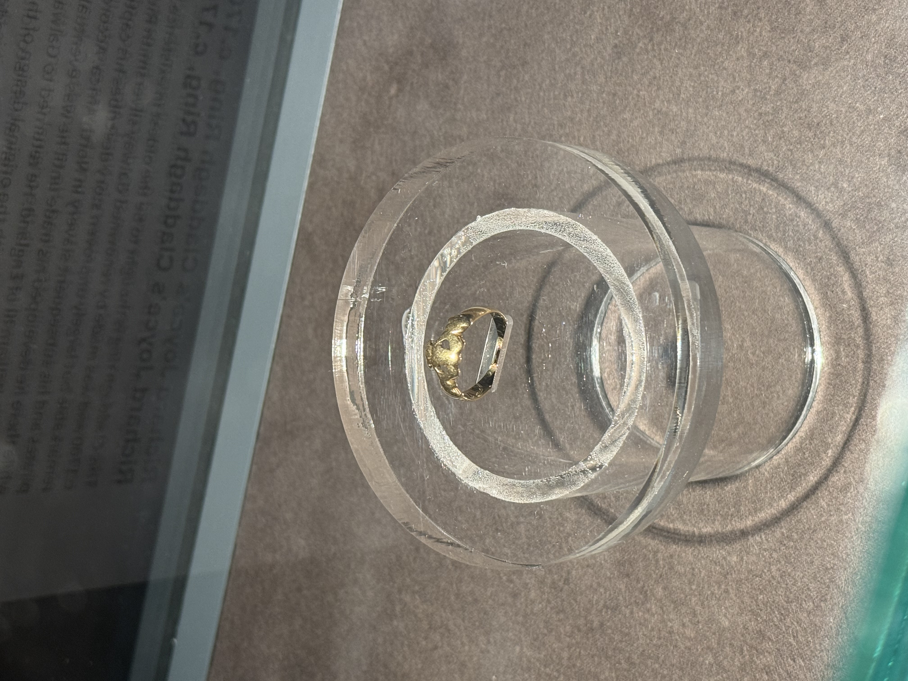
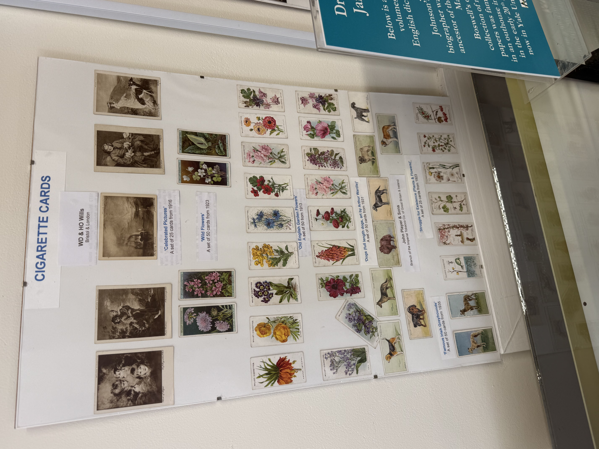
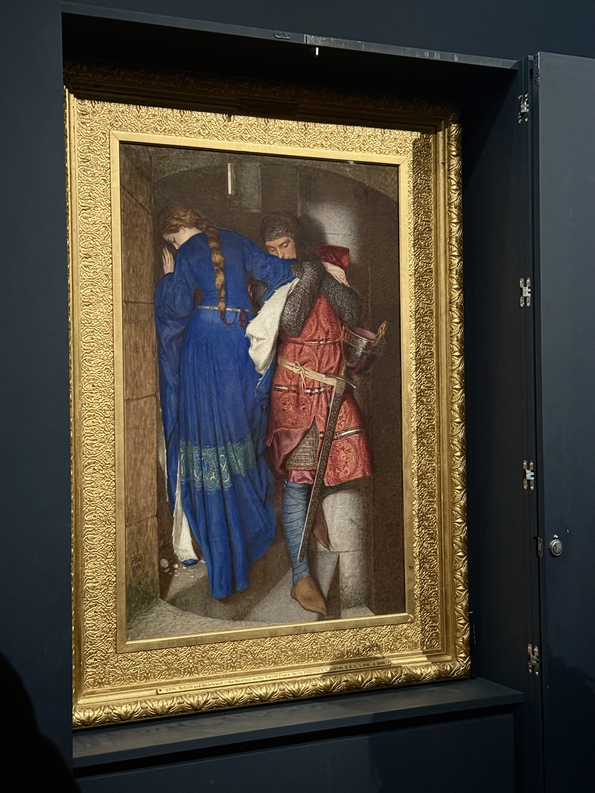
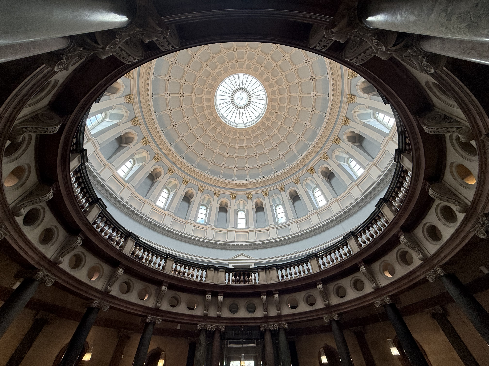

Galway City Museum
This museum was adorable, quiet and interesting. They had a lot about woven medieval settlements and social structure, the oldest claddagh ring and an intricate silver mace. I really enjoyed the fishing boat called a hooker, the bright green Victorian post box symbolic of the nation's identity and the preserved statue of Pádraic Ó Conaire. Pádraic Ó Conaire was a writer who helped support Ireland's efforts at re-instating their native language, his statue shows him writing with a slight hunch and one foot on top of the other, it appears as though we've caught him in an intimate moment between himself and his work. This statue and museum helped me understand Irish identity and the threads and culture of the past that hold the country together today.
Malahide Historical Society Museum
This little informal museum had an eclectic collection of old knick knacks people have donated over the years. The most interesting part to me was the cigarette card collection, used as a marketing tactic to encourage purchasing. With it being the smallest museum I've been to, it was also the most intimate and recent in its collection. Old cameras, hotel plates, a propeller from WW2 and other memorabilia gave a little glimpse into Malahide's past. I also felt like this area was more residential and less touristy than other towns outside of Dublin, and it was cool to learn a little bit about this slice of the planet.


The National Gallery of Ireland
The National Gallery was absolutely gorgeous, both in the architecture of the building itself and the art it houses. I went alone the first weekend of our trip, and it was wonderful to just wander the halls and watch everyone appreciate the art or sketch a sculpture. I observed a moment of a father and daughter looking at Pierre Bonnard's Boy Eating Cherries painting, and because it was mothers day that sunday it made me think of my mom. I loved learning about Irish artists here, my favorites being Harry Clark's almost 90's manga looking illustrations and stained glass and Willam John Leech's Convent Garden. From here I have postcards I will treasure for years to come.
National Museum of Ireland
This museum had stunning architecture and incredible examples of preserved clothing, metalwork, tools, jewelry from bogs. I had such a weird feeling seeing these remnants from 4,000 so perfectly intact, it was a bit creepy especially in the mummy room upstairs as well. The dim lighting and recognizable human shapes was a reminder to me that time keeps moving on, but we've always been people, with our clothes to keep us warm, utensils to eat and comb to keep our hair neat.
